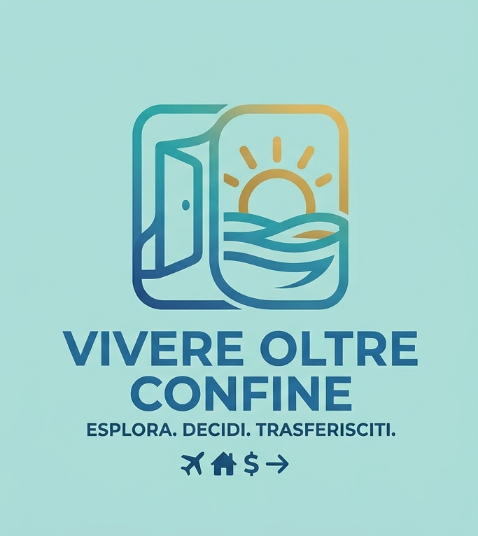

Tutti i materiali extra citati nei video — dossier fiscali, tabelle di confronto costo della vita e approfondimenti — raccolti qui, gratis, per chi vuole consultarli con calma.
Dove vivere con 1.000€ al mese — Albania, Grecia, Portogallo, Bulgaria, Romania